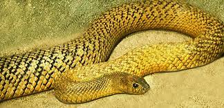

Характеристика
Тайпаны (лат. Oxyuranus) — род очень ядовитых змей семейства аспидов. Крупные австралийские змеи, чей укус считается самым опасным среди современных змей — до выработки антидота к нему (в 1955 году) от укуса тайпана умирали более чем в 90 % случаев. Тайпана очень тяжело заметить в тропиках тк его раскраска хорошо маскирует его пд листву.